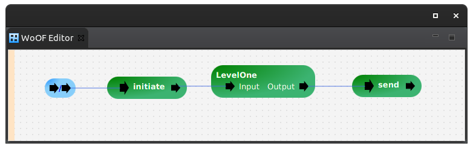
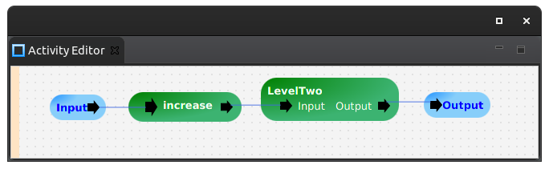
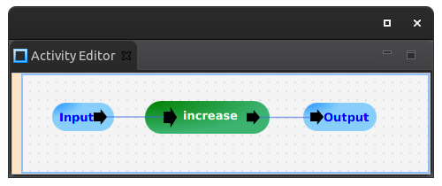

This tutorial demonstrates modularising configuration.
To focus on modular configuration, this tutorial uses a simple application that returns the depth of modules within modules.
Modularising configuration is necessary when working on bigger projects by bigger teams.
Trying to configure all logic of a large application into the single WoOF configuration file yields a lot of complexity. The idea of the graphical configuration is easy understanding of how the application is put together. When the single graphical configuration file becomes too involved it looses its readability. Therefore, it is broken into modules to make it easier to understand.
Also, scaling teams requires developers to work in isolated parts of the applications. Having the single configuration file creates a focal point for changes. This causes developers to step on each other's toes and creates problems through increased number of merge conflicts. Breaking configuration into smaller files reduces risk of merge conflicts.
By modularising the configuration to smaller files, it allows:
Modularising the configuration is undertaken with the ActivitySectionSource. The name Activity comes from business. An Activity is a composition of many Procedures.
The IDE plugins natively support Activities so this only becomes a selection when adding a Section. However, the application must add support via the following dependency:
<dependency> <groupId>net.officefloor.activity</groupId> <artifactId>officeactivity</artifactId> </dependency>
To demonstrate using Activities to modularise configuraiton, the top level WoOF configuration file is as follows:
The above configuration has a Procedure:
public Depth initiate() {
return new Depth(0);
}
creating and passing on the following parameter:
@Data
@AllArgsConstructor
@NoArgsConstructor
public class Depth {
private Integer level;
}
to the following modular Activity:
Within the above Activity, the Procedure increments the depth:
public Depth increase(@Parameter Depth depth) {
return new Depth(depth.getLevel() + 1);
}
that is passed onto a further modularised Activity:
that also increases the depth.
The result is then passed out of the modularised Activity configurations to the top level WoOF configuration to send the result via the following Procedure:
public void send(@Parameter Depth depth, ObjectResponse<Depth> response) {
response.send(depth);
}
This is only a simple example of modularising configuration.
More complex Activity configurations may have multiple inputs and outputs. Furthermore, they may internally provide exception handling (or let exceptions propagate to a higher Activity).
However, only the inputs/outputs are shown to higher level configuration. This encapsulates the modularised Activity so developers can change without impacting higher level configurations. This is akin to coding behind interfaces (i.e. configuring behind input/output interfaces).
Furthermore, as the Activity is loaded from the class path, Activities may be built as libraries. Applications can then import the resulting built jars to re-use the modularised Activity functionality.
The Activity is actually an implementation of a SectionSource. The Section is the generic modularisation of all configurations. Many of plugins are implemented through Sections.
It is beyond this tutorial to give a full explanation of the SectionSource. See existing plugins for examples of implementations.
The following tests the increased depth of configuration modularisation:
@RegisterExtension
public MockWoofServerExtension server = new MockWoofServerExtension();
@Test
public void correctDepth() throws Exception {
MockWoofResponse response = this.server.send(MockWoofServer.mockRequest());
response.assertJson(200, new Depth(2));
}
The next tutorial covers transaction (GovernanceSource) within a WoOF web application.